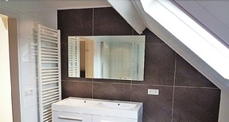

Verbouw en modernisering
Kozijnen, deuren en ramen in hout of kunststof. Binnen- en buitenmuren plaatsen of weghalen, houten vloeren en betonvloeren, nieuwe dakconstructies en stucwerk binnen en buiten.
Ook keukens en sanitair met alles wat erbij komt kijken, en het plaatsen en onderhouden van elektra en verwarming.